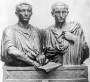

MÖ 133 yılına gelindiğinde Roma İmparatorluğu antik dünyanın en büyük gücü haline gelmişti. Yunanistan’dan İspanya’ya kadar uzanan bir coğrafyaya yayılmıştı. Roma lejyonları, Akdeniz’in neredeyse her köşesini egemenlik altına almıştı. Yüzlerce yıl sürecek bir Roma üstünlüğü kurulmuştu ve bu sayede Roma’ya büyük zenginlikler akmaktaydı.

Ne var ki gerçek savaşçılar Roma’nın başarılarından pek az istifade ediyorlardı. Gerçekten de, pek çok lejyoner savaş meydanlarından geri döndüklerinde kendilerine ait çiftliklerin iflas etmiş olduğunu gördüler. Sahip oldukları şeyler yok olmuş, aileleri harap olmuştu. Tahmin edilebileceği üzere yıllarını ülkeleri için harcamış olan bu insanlar karşılaştıkları bu manzaraya içerlediler.
“Dünyaya hükmetmişlerdi ama kendilerine ait bir parça toprakları bile yoktu” diye yakınır Romalı politikacı Tiberius Sempronius Gracchus (MÖ 168-133). Tiberius, Gracchi kardeşlerin büyük olanıdır. Her ikisi de zengin aristokratların gücünü sınırlayarak Roma’da daha eşit bir hayat kurmak isteyen sosyal reformculardı. Gazilerin, ülkelerine döndüklerinde çiftliklerinin onları bekliyor olmasını garanti altına almak istiyorlardı. Plutarch’a göre, hem Tiberius hem de kardeşi Gaius (MÖ 154-121) vahşi bir şekilde katledilmeden önce halk kesiminden pek çok kişiye ilham kaynağı olmuştur.
Tiberius ünlü bir generalin torunuydu. İspanya ve Yunanistan’da savaşmıştı. Roma’ya döndüğünde halk koruyucusu seçildi. (MÖ 133) Amacı büyük bir bölümü işsiz ve evsiz olan gazilerin gelirlerini arttırmaktı. Bunun için bir dizi eşitlikçi reform önerdi. Bunların arasında latifundia olarak bilinen büyük topraklara el konulması da vardı. Tiberius bu toprakları Roma’nın yoksullarına dağıtacaktı.
Senato’daki güçlü muhalefete rağmen, Tiberius önerisini kanunlaştırmayı başardı. Tekrar seçilmesini engellemek için bir yıllık görev süresinin sonunda rakipleri tarafından öldürüldü ve cesedi Tiber nehrine atıldı. Kardeşi Gaius on yıl sonra toprak reformunu yeniden gündeme getirdi, ancak reforma karşı çıkan muhafazakarlar onu da öldürdüler.
Ek Bilgiler
1- Ortak politik amaçları olmasına rağmen kardeşlerin kişilikleri çok farklıydı. Plutarch’a göre “Tiberius kibar ve sakindi. Gaius ise gergin ve öfkeli. Biri nutuk atarken bile sakin kalmayı başarırken, öbürü asla yerinde duramazdı.”
2- Tiberius, düşmanlarının canına kast ettiğini biliyordu. Togasının altında dolo adı verilen kısa bir kılıç saklardı. Ne var ki saldırıya uğradığı sırada hasımlarının sayısı o kadar fazlaydı ki bunun bir yararı olmadı. Plutarch’a göre üç yüz kadar Tiberius taraftarı da aynı saldırıda yaralanmıştır.
3- Gracchi kardeşlerin büyük babası Scipio Africanus’tur (MÖ 236-183). Africanus, MÖ 202 yılındaki 2. Punic Savaşı’nda Hannibal’ı yenilgiye uğratan generaldir.